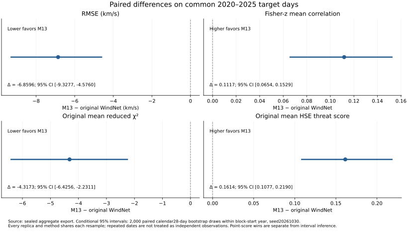
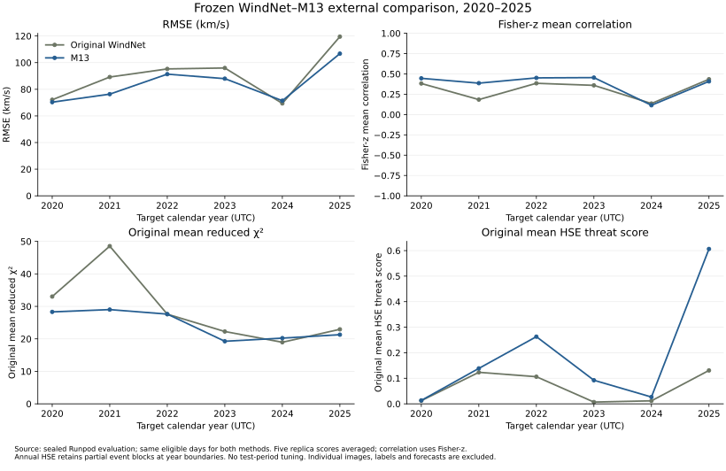

Frozen models. A new solar-cycle test.
Original released WindNet against the existing M13 model on the same new target dates. Both methods were frozen before test access.
One frozen pass. Zero test-period fitting, tuning or model changes.
Numerical gains and paired uncertainty are reported separately. No model was selected or promoted from these results.
The matched comparison
Each metric averages the five frozen historical replicas; correlation uses Fisher-z averaging. Each target date counts once.
| Method / period | RMSE (km/s) ↓ | Fisher-z correlation ↑ | Original reduced χ² ↓ | Original HSE threat score ↑ | Unique days | Positive σ days |
|---|---|---|---|---|---|---|
| Original WindNet | 92.0056 | 0.4002 | 28.3801 | 0.0687 | 1968 | 1968 |
| M13 | 85.1460 | 0.5119 | 24.0628 | 0.2302 | 1968 | 1968 |
Paired differences and uncertainty
M13 minus original WindNet. Negative favors M13 for RMSE and χ²; positive favors M13 for correlation and HSE. Conditional 95% intervals use 2,000 paired calendar-block bootstrap draws.
| Metric | Point difference | Paired 95% interval | Defined draws |
|---|---|---|---|
| RMSE (km/s) ↓ | -6.8596 | [-9.3277, -4.5760] | 2000 |
| Fisher-z correlation ↑ | 0.1117 | [0.0654, 0.1529] | 2000 |
| Original reduced χ² ↓ | -4.3173 | [-6.4256, -2.2311] | 2000 |
| Original HSE threat score ↑ | 0.1614 | [0.1077, 0.2190] | 2000 |

Performance across calendar years
● Original WindNet ● M13

Source: frozen Runpod external evaluation, target dates 2020–2025. Each point averages five replica scores; correlation is Fisher-z averaged. Annual HSE retains partial event blocks at year boundaries. No yearly result was used for tuning.
All annual scores and denominators
| Method / period | RMSE (km/s) ↓ | Fisher-z correlation ↑ | Original reduced χ² ↓ | Original HSE threat score ↑ | Unique days | Positive σ days |
|---|---|---|---|---|---|---|
| 2020 · Original WindNet | 72.1345 | 0.3824 | 33.0289 | 0.0125 | 338 | 338 |
| 2020 · M13 | 70.3246 | 0.4461 | 28.3039 | 0.0133 | 338 | 338 |
| 2021 · Original WindNet | 89.1969 | 0.1842 | 48.5482 | 0.1234 | 295 | 295 |
| 2021 · M13 | 76.3440 | 0.3863 | 29.0113 | 0.1388 | 295 | 295 |
| 2022 · Original WindNet | 95.2853 | 0.3848 | 27.5990 | 0.1062 | 295 | 295 |
| 2022 · M13 | 91.3595 | 0.4514 | 27.6193 | 0.2630 | 295 | 295 |
| 2023 · Original WindNet | 95.9854 | 0.3595 | 22.2655 | 0.0069 | 337 | 337 |
| 2023 · M13 | 87.9854 | 0.4549 | 19.2585 | 0.0923 | 337 | 337 |
| 2024 · Original WindNet | 69.3829 | 0.1358 | 18.9513 | 0.0118 | 352 | 352 |
| 2024 · M13 | 71.4129 | 0.1146 | 20.2281 | 0.0267 | 352 | 352 |
| 2025 · Original WindNet | 119.5251 | 0.4345 | 22.9362 | 0.1308 | 351 | 351 |
| 2025 · M13 | 106.7649 | 0.4083 | 21.2891 | 0.6063 | 351 | 351 |
Coverage and common exclusions
1,968 common target days retained from 2,192 requested days. 141 of 157 fixed calendar event blocks retained; 16 incomplete blocks excluded for both methods.
Missing inputs and invalid targets exclude the whole original event block. Calendar gaps are never compacted. χ² uses an identical positive finite-sigma mask.
Image exclusions: {'nonfinite_or_shape': 2, 'quality_flag': 12}.
What was checked before test access
| Check | Recorded evidence |
|---|---|
| Original WindNet restoration | Five reference blocks, 70 forecasts; maximum absolute difference 0.000710 km/s |
| M13 saved artifacts | All 55 hashes verified; independent saved-recipe composition matched on three histories per replica; zero refits |
| Preprocessing bridge | 2018-01-01 image RMS difference 0.001782 on the 0–256 scale |
| Scorer | Direct-score equivalence, common gap exclusion, calendar bootstrap boundaries and no replica count inflation checked with synthetic data |
The evaluation contract
Same four image dates, same 211 Å channel, same target days, same masks and same four metrics. Original TensorFlow author checkpoints, not a replacement baseline. M13 loads existing F3 weights and saved normalization. No test-period calibration, refitting or checkpoint selection.
The fixed 14-day event blocks are anchored on 2020-01-01. Paired uncertainty uses fixed calendar 28-day units within block-start year, shared by both methods and every replica. Definitive JSOC synoptic images are processed with the published SDOMLv1 SUM convention and the frozen version-8 AIA response table. OMNI daily sigma describes variation across hourly speeds.
This is a head-to-head external-period comparison. Its absolute metrics cannot be directly compared with the paper’s different historical target days. The older adaptive research loop remains paused.
Evidence and reproducibility
RogNet campaign ↗ · Registered experiment ↗ · GitHub code and complete evidence ↗
RogNet’s connector created this campaign privately; its available tools cannot change public sharing. Dashboard access remains unchanged.
- model_lock.json
- evaluator_freeze.json
- evaluator_freeze_identity.json
- author_restoration_preflight.json
- m13_inference_preflight.json
- protocol_amendments.json
- status.json
- external_results.json
- prediction_lock.json
- aggregate_comparison.csv
- RESULTS.md
- result_verification.json
- costs.json
Complete evaluator SHA-256: 4cf33024df2d83267eaa079bde36f639b481512949d2f66bc01b62b003875927. Frozen code commit d12d1fc, published before external execution.